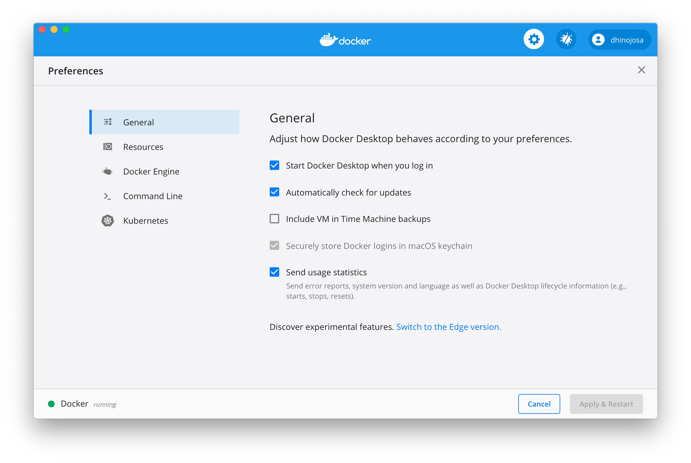
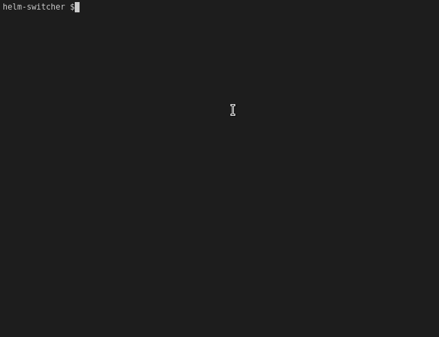
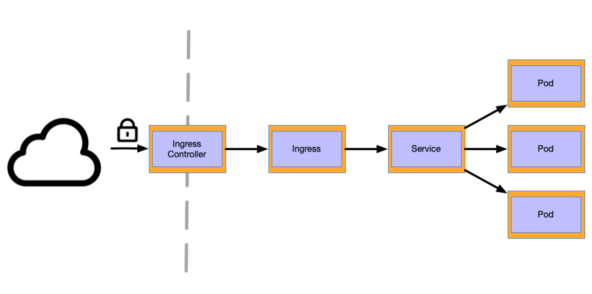
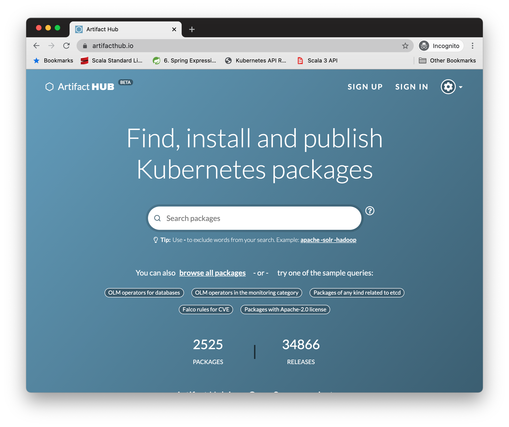
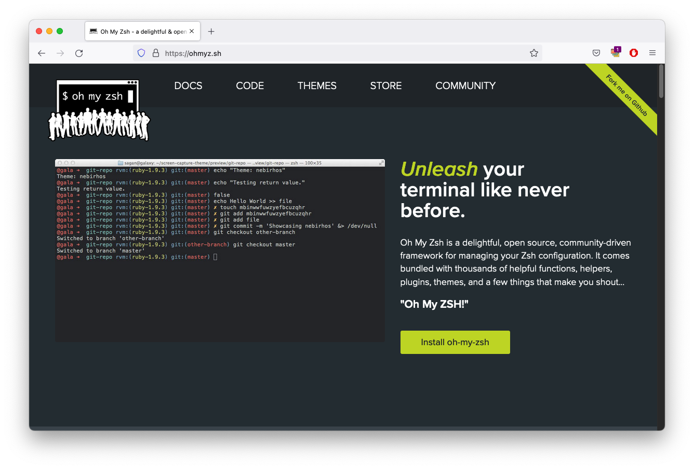
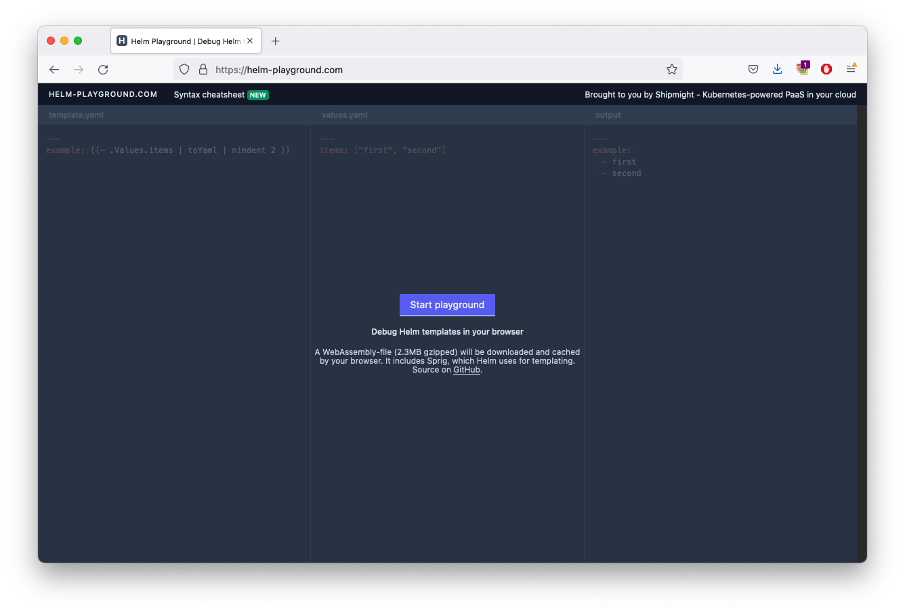
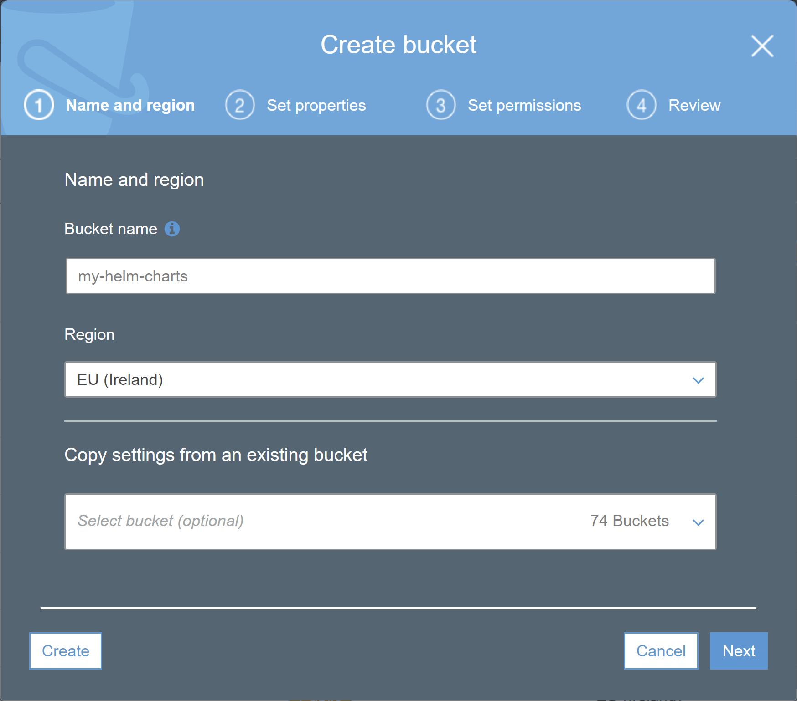

% brew install kubectlWorking with Helm
Daniel Hinojosa
Course Overview
The Helm Fundamentals course is designed to be an introduction to understanding and working with the Helm Kubernetes package manager.
It will start with a journey to understand why Helm exists and its purpose.
The course will then navigate a path towards how to work with it, including
Building charts
Publishing charts
Using them to release and manage Kubernetes workloads
Various capabilities Helm offers via its CLI
Audience
Developers, Service Owners, Ops
Purpose for the Class
To gain a comprehensive understanding of Helm and how to use it to package and manage Kubernetes workloads
Prerequisites for the Class
Knowledge and working experience with Kubernetes. This includes understanding common resources and usage of things like Deployments, Config Maps, Secrets, Pods, Container Spec, etc.
Some level of comfort with the command line (
kubectl, piping output, navigating folders, etc)
Objectives
Understand the purpose of Helm, why it exists
Create Helm charts of your own ready for distribution
Test helm in local, and how to validate your changes
Understand all features and practices around Helm chart source code
Feel comfortable with best practices around using Helm as well as gotchas of Helm
Objectives (Continued)
Know how Helm charts are commonly distributed and stored, and work with Helm chart repositories
Understand the architecture of Helm, where it is today, and where it’s headed
Use the various features of the CLI including packaging charts, installing and using plugins, installing and upgrading charts.
Have awareness of development and testing strategies around Helm charts, and be able to use these strategies
How to use Helm securely
Introduction
Purpose of Helm
Manages Kubernetes Applications
Templatizes Kubernetes Resources
Repeatable Application Installation
Upgrade Applications
Reusability
Share Charts on Repositories
Rollback to Previous Applications
Architecture
Discuss the components of Helm
Discuss how Helm is implemented
Components (v2)
Helm has two components (v2):
Client
Tiller

Components (v3)
Tiller has been removed
Replaced with client/library architecture
Interacts directly with the Kubernetes API Server
Security is now on a per-user basis.

Helm Client
Command Line for End Users
Local Chart Development
Managing Repositories
Sending charts to be installed
Asking for information about releases
Requesting upgrading or uninstalling of existing releases
Implementation
Helm is written in the Go Language
In v2, gRPC is used to interact with the server
In v3, Uses the Kubernetes client library to communicate with Kubernetes API Server
Installing
In this section:
Installing Kubectl
Installing Docker Desktop
Installing Helm
Installing kubectl on Mac
Installing kubectl on Linux
Run the following curl download:
% curl -LO https://storage.googleapis.com/kubernetes-release/release/ \ $(curl -s https://storage.googleapis.com/kubernetes-release/release/stable.txt) \ /bin/linux/amd64/kubectlMake
kubectlbinary executable% chmod +x ./kubectlMove the binary to the
PATH% sudo mv ./kubectl /usr/local/bin/kubectl
Installing Docker
Download and install the latest docker client: https://docs.docker.com/get-docker/
Install Kubernetes
We are going to be deploying applications on Kubernetes, therefore we need a cluster Typically, we will manage remote clusters, but for class, and experimentation we will use Docker-Desktop Though we are using docker-desktop, there are other solutions:
Remote Kubernetes
AWS
GCP
More…
Local Kubernetes
Minikube
Kind
Docker Desktop
K3S
Installing Docker Desktop for Kubernetes
Visit the Docker Menu and select Preferences

Selecting Adequate Memory
Select Resources and ensure that you have memory of at least 8.0GB

Turning on Docker Desktop Kubernetes
Select Kubernetes and select Enable Kubernetes

Installing Helm
Binary Source
Homebrew (MacOSX)
Chocolatey (Windows)
Snap (Linux)
Homebrew Install of Helm on MacOSX
% brew install helmLinux Helm Install
Download from https://github.com/helm/helm/releases
Unpack it (
tar -zxvf helm-v3.3.4-linux-amd64.tgz)Find the helm binary in the unpacked directory, and move it to its desired destination (
mv linux-amd64/helm /usr/local/bin/helm)
Other Installation Instructions
Need to support both multiple versions of Helm?
Helm-Switcher is a CLI tool to switch between different versions of Helm 1, 2 or 3
Run the command and use the dropdown to choos the desired version of Helm.
Available only for Linux and MacOS
$ brew install tokiwong/tap/helm-switcherFigure 1. Using Helm-Switch
Stopping Docker-Desktop
At the end of the class, be sure to stop docker-desktop’s Kubernetes
Deselect Kubernetes ▸ Enable Kubernetes to disable
Kubernetes
Review of Resources
Pod
Group of one or more containers (such as Docker containers)
Shared storage/network
Specification for how to run the containers
Service
Service is an abstraction which defines a logical set of Pods and a policy by which to access them
Sometimes this pattern is called a microservice
The set of Pods targeted by a Service is usually determined by a selector
Deployment
Provides declarative updates for Pods and ReplicaSets.
Describe a desired state in a Deployment
Deployment Controller changes the actual state to the desired state at a controlled rate.
You can define Deployments to create new ReplicaSets,
Or remove existing Deployments and adopt all their resources with new Deployment
ConfigMap
Bind to your Pods' containers and system components at runtime
Configuration files
Command-line arguments
Environment variables
Port numbers
Other configuration artifacts
Enable you to separate your configurations from your Pods and components, making workloads portable.
ServiceAccount
Service accounts allow pods to communicate to the Kubernetes API.
They are bound to specific namespaces, and created automatically by the API server or manually through API calls.
Service accounts are tied to a set of credentials
Ingress
Object defines rules for routing HTTP(S) traffic to applications running in a cluster.
An Ingress object is associated with one or more Service objects
Each Service is associated with a set of Pods
Kubernetes Ingress and Service

3-tier Architecture

Basic Operations
Glossary of Terms
Chart Definition
A Helm package.
Contains all of the resource definitions necessary to run an application, tool, or service inside of a Kubernetes cluster.
Think of it like the Kubernetes equivalent of a Homebrew formula, an Apt dpkg, or a Yum RPM file.
Repository Definition
A Repository is the place where charts can be collected and shared.
It’s like Perl’s CPAN archive, Fedora Package Database, or Maven Central but for Kubernetes packages.
Release Definition
A Release is an instance of a chart running in a Kubernetes cluster.
One chart can often be installed many times into the same cluster.
Each time it is installed, a new release is created.
For Example:
If you want two databases running in your cluster, you can install that chart twice.
Each one will have its own release, which will in turn have its own release name.
Glossary Review
Helm installs charts into Kubernetes, creating a new release for each installation. And to find new charts, you can search Helm chart repositories.
Setting up a Repository
Setting up the Initial Repository
The following is the official repository
Your use of Helm will lead you to other repositories (e.g. bitnami)
$ helm repo add stable https://charts.helm.sh/stableRepository Update
Running the following will refresh your local catalog of available helm charts
$ helm repo updateFinding Charts
You can search for charts using:
helm search hub <name>- Search for charts in the Helm Hub or an instance of Monocularhelm search repo <name>- Search repositories for a keyword in all your repositories
$ helm search hub mysql| Monocular is a web-based application that enables the search and discovery of charts from multiple Helm Chart repositories. |
Chart Search Results
Returns for example:
URL CHART VERSION APP VERSION DESCRIPTION
https://hub.helm.sh/charts/prometheus-com/prome... 0.7.1 v0.11.0 A Helm chart for prometheus mysql exporter with...
https://hub.helm.sh/charts/incubator/mysqlha 2.0.0 5.7.13 MySQL cluster with a single master and zero or ...
https://hub.helm.sh/charts/presslabs/mysql-cluster 0.2.0 1.0 A Helm chart for easy deployment of a MySQL clu...
https://hub.helm.sh/charts/presslabs/mysql-oper... 0.4.0 v0.4.0 A Helm chart for mysql operatorHelm Charts
Another way to find Charts is Helm Hub: https://artifacthub.io/

Search for Specific Charts
$ helm search repo hadoop$ helm search repo hadoop danno@DannoAir
NAME CHART VERSION APP VERSION DESCRIPTION
stable/hadoop 1.1.2 2.9.0 The Apache Hadoop software library is a framework that al...
stable/luigi 2.7.5 2.7.2 Luigi is a Python module that helps you build complex pip...| Now you will only see the results that match your filter |
Inspect your search with show
You can view information about your chart including
Maintainers
Instructions
Values
$ helm show chart <chart> <flags>
Inspect your Search Example
$ helm show chart stable/hadoopShow Chart Results
apiVersion: v1
appVersion: 2.9.0
description: The Apache Hadoop software library is a framework that allows for the
distributed processing of large data sets across clusters of computers using simple
programming models.
home: https://hadoop.apache.org/
icon: http://hadoop.apache.org/images/hadoop-logo.jpg
maintainers:
- email: disla@google.com
name: danisla
name: hadoop
sources:
- https://github.com/apache/hadoop
version: 1.1.2View information on a chart before installing
$ helm show chart stable/mysqlInstall Chart
To install chart, install a chart using either of the following commands
$ helm install <release-name> <repo>/<name>To ask Helm to generate a name, albeit boring, use:
$ helm install --generate-name <repo>/<name>Each release gets its own name
Therefore each can be managed separately
Installing a Chart in a specific namespace
You can install a chart to a specific namespace by using
--namespaceor-n$ helm install <release-name> <repo>/<name> -n marketingUsing
--generate-nameand--namespacetogether$ helm install --generate-name <repo>/<name> --namespace <namespace>
| The namespace must exist first before installing into a particular namespace |
Dry-Run Install Chart
To install chart with a dry run you can run either of the following
$ helm install --dry-run --debug <release-name> <repo>/<name>$ helm install --dry-run --debug --generate-name <repo>/<name>Show all releases
The following will list all releases that have been installed with information retained
$ helm list --allTo show only deployed releases
$ helm listTo show only deployed releases
$ helm list
You can use helm ls in place of helm list |
Show all releases in a particular namespace
The following will list all releases in a namespace of your choosing
$ helm list --all -n <namespace>To show only deployed releases in a particular namespace
$ helm list -n <namespace>
Determining the Status
Deployments need time to download containers
Check the status with the following
This will also show a NOTES.txt, basic set of chart instructions
$ helm status <release-name>In a particular namespace
$ helm status <release-name> -n <namespace>
Querying Values to Override
Helm charts are extremely flexible to change configuration, the following command shows values
$ helm show values <chart>$ helm show values stable/mysqlShowing Values
Values of stable/mysql
image: "mysql"
imageTag: "5.7.30"
strategy:
type: Recreate
busybox:
image: "busybox"
tag: "1.32"
testFramework:
enabled: true
image: "bats/bats"
tag: "1.2.1"
imagePullPolicy: IfNotPresent
securityContext: {}Setting the Values
We can see the values that can be changed using
helm show valuesAll values can be changed!
For Example, given the following values formatted as yaml
image: "mysql" imageTag: "5.7.30" testFramework: enabled: true image: "bats/bats" tag: "1.2.1" imagePullPolicy: IfNotPresent securityContext: {}You can change the
imageTagusing--set imageTag=5.7.31You can change nested elements like the
tagintestFrameworkusing--set testFramework.tag=1.2.2
Showing the Chart
To describe the chart:
$ helm show chart stable/mysqlThe results of showing the chart
apiVersion: v1
appVersion: 5.7.30
description: Fast, reliable, scalable, and easy to use open-source relational database
system.
home: https://www.mysql.com/
icon: https://www.mysql.com/common/logos/logo-mysql-170x115.png
keywords:
- mysql
- database
- sql
maintainers:
- email: o.with@sportradar.com
name: olemarkus
- email: viglesias@google.com
name: viglesiasce
name: mysql
sources:
- https://github.com/kubernetes/charts
- https://github.com/docker-library/mysql
version: 1.6.7Upgrading the Chart
If you need to make a change with the values, or make another adjustment
$ helm upgrade <release-name> <chart> <flag>For example:
$ helm upgrade --set imageTag=5.7.30 --set testFramework.tag=1.2.2 \ galloping-gazelle stable/mysql
Upgrading the Chart with a File
If you have your own values.yaml file, you can include it using the
-fflagPriority will be given to the right hand flag
$ helm upgrade -f myvalues.yaml -f override.yaml <release-name> <repo>/<chart>
Uninstall a release
To uninstall a release simply use
uninstall$ helm uninstall <release-name>To uninstall from a namespace use
-nor--namespace$ helm uninstall <release-name> -n <namespace>
Use --dry-run switch to see what will be uninstalled with actually uninstalling them |
Uninstall with a History
Using
--keep-historywill retain deployment historyYou can view previous deployments using:
helm list --uninstalledhelm list --all$ helm uninstall --keep-history
Getting Autocomplete Script Help
For Bash:
$ helm completion bashFor ZSH:
$ helm completion zsh
Applying Autocomplete Script Help
In order to apply to the current shell session, use a direction arrow to apply through
source$ source <(helm completion zsh)The Website directions mention to use the following, but it may end up messy
$ helm completion zsh > "${fpath[1]}/_helm"
If you are on a Mac and using ZSH, consider OhMyZSH!
OhMyZSH is a open source shell enhancement
You can use themes for your shell
And contains autocompletions for many application you constantly use

Adding Plugins to OhMyZSH
Once you have OhMyZSH installed, edit your .zshrc file
Locate the
pluginsattribute, and add the plugins you useFind more plugins at the OhMyZSH website
Snippet of the contents in ~/.zshrc# Which plugins would you like to load? (plugins can be found in ~/.oh-my-zsh/plugins/*) # Custom plugins may be added to ~/.oh-my-zsh/custom/plugins/ # Example format: plugins=(rails git textmate ruby lighthouse) # Add wisely, as too many plugins slow down shell startup. plugins=(git z docker docker-compose kubectl sdk vault helm)
Getting Help
$ helm get -h$ helm ls -hLab 1: Install Chart
Open your lab book, lab_book.html, and do "Lab 1: Install a public chart"
YAML
YAML Primer
Let’s get an understanding quickly of the YAML Specification
Visit The full YAML Specification for more information
YAML List
sequence:
- one
- two
- threeYAML Map
map:
one: 1
two: 2
three: 3Integer Scalars
If an integer or float is an unquoted bare word, it is typically treated as a numeric type
count: 1 size: 2.34If they are quoted, they are treated as strings:
count: "1" # <-- string, not int size: '2.34' # <-- string, not float
Boolean Scalars
isGood: true # bool
answer: "true" # stringnull
isAvailable: nullCoercing YAML Values
You can coerce YAML values using
!!Below:
!!strtells the parser that age is a string, even if it looks like anint.portis treated as anint, even though it is quoted.coffee: "yes, please" age: !!str 21 port: !!int "80"
YAML Strings
Three inline ways to declare a string
way1: bare words way2: "double-quoted strings" way3: 'single-quoted strings'Bare words are unquoted, and are not escaped. For this reason, you have to be careful what characters you use.
Double-quoted strings can have specific characters escaped with
\.For example
"\"Hello\", she said".You can escape line breaks with
\n.
Single-quoted strings are “literal” strings, and do not use the
\to escape characters.The only escape sequence is
'', which is decoded as a single'.
Multiline Strings
Multiline strings can be declared using
|The following is equivalent to:
Latte\nCappuccino\nEspresso\ncoffee: | Latte Cappuccino Espresso
| The first line has be correctly indented |
Multiline with Trimming
The previous slide will render a multiline string with an additional newline
To trim the extra newline, use a dash
-The following is equivalent to:
Latte\nCappuccino\nEspressocoffee: |- Latte Cappuccino Espresso
Indentation is Preserved
Indentation inside of a text block is preserved, this includes line breaks
In the following,
coffeeisLatte\n 12 oz\n 16 oz\nCappuccino\nEspressocoffee: |- Latte 12 oz 16 oz Cappuccino Espresso
Maintaining all Trailing Whitespaces
Using
|+maintains all trailing whitespaceThe following evaluates to:
Latte\nCappuccino\nEspresso\n\n\ncoffee: |+ Latte Cappuccino Espresso another: value
Folded Multiline Strings
Sometimes you want to represent a string in your YAML with multiple lines, but want it to be treated as one long line.
This is called “folding”.
To declare a folded block, use
>instead of|The following will render
coffeeasLatte Cappuccino Espresso\ncoffee: > Latte Cappuccino Espresso
Folding and Trimming
Given the previous slide, it still maintains the last
\nWe can then use
>-to fold and trim all the newlinesThe following produces for
coffee:Latte\n 12 oz\n 16 oz\nCappuccino Espressocoffee: >- Latte 12 oz 16 oz Cappuccino Espresso
Embedding Multiple Documents
You can embed multiple yaml files in a single file
This is done by prefixing:
_, and ending with…In many cases they can be omitted since it would be up to the parser
---
document:1
...
---
document: 2
...YAML Anchors
YAML spec provides a way to store a reference to a value and later refer to that value by reference.
YAML refers to this as “anchoring”
Use
&as the referenceUse
*as the pointercoffee: "yes, please" favorite: &favoriteCoffee "Cappucino" coffees: - Latte - *favoriteCoffee - Espresso
| References are expanded and then discarded. The anchors in Helm and K8s will be lost |
Create Basic Chart
Agenda:
Creating a chart
Understanding templates
Performing Dry Runs
Understanding Values
Creating a Chart
% helm create mychartThis will create:
.
└── mychart
├── Chart.yaml
├── charts
├── templates
│ ├── NOTES.txt
│ ├── _helpers.tpl
│ ├── deployment.yaml
│ ├── ingress.yaml
│ ├── service.yaml
│ ├── serviceaccount.yaml
│ └── tests
│ └── test-connection.yaml
└── values.yamlChart.yaml
A default YAML file containing information about the chart
apiVersion: v1
appVersion: "1.0"
description: A Helm chart for Kubernetes
name: mychart
version: 0.1.0Mandatory Fields in Chart.yaml
| Key | Description |
|---|---|
| Chart API version |
| Version that app contains |
| Single sentence description |
| Name of the project |
| SemVer 2 version |
charts Directory
The charts directory is a directory containing any charts upon which this chart depends
templates Directory
A directory of templates that, when combined with values, will generate valid Kubernetes manifest files
_helpers.tpl- helper templatesKubernetes files
tests - unit
Additional Fields
| Key | Description |
|---|---|
| SemverRange of compatible K8s versions |
| List of keywords |
| Project’s Home Page |
| List of URLs of source code |
| List of maintainers (see maintainer object) |
Additional Fields Continued
| Key | Description |
|---|---|
| Name of the template engine; default: Go Template Engine |
| SVG or PNG representing the chart |
| Whether this chart is deprecated |
| Version of Tiller (Semver) |
Maintainers:
The maintainers, previous slide looks like the following
| Key | Description |
|---|---|
| Maintainer’s name |
| Maintainer’s email |
| Maintainer’s url |
SemVer Standard
Given a version number
MAJOR.MINOR.PATCH, increment the:MAJORversion when you make incompatible API changes,MINORversion when you add functionality in a backwards compatible manner, andPATCHversion when you make backwards compatible bug fixes.Additional labels for pre-release and build metadata are available as extensions to the
MAJOR.MINOR.PATCHformat.
There are additional rules, see website for details
Charts and Versioning
Versions must follow SemVer2 Versioning
Example the tar ball that represents nginx, given the name
nginxand version1.2.3nginx-1.2.3.tgzVersion field is in the Chart.yml is used by various tools. All version numbers must match.
appVersion
App version is for users' use, purely informational
Doesn’t follow SemVer rules
Deprecating Charts
The optional
deprecatedfield in Chart.yaml can be used to mark a chart as deprecatedIf the latest version of a chart in the repository is marked as deprecated, then the chart as a whole is considered to be deprecated.
The chart name can later be reused by publishing a newer version that is not marked as
deprecated
LICENSE, README, _Notes.txt
LICENSE is the licensing used in Helm
README is Markdown information on how to use the chart, before installation
template/NOTES.txt used to display the status of the release when using
helm packageorhelm status, after installation
.helmignore File
Used to specify files you don’t want to include in your helm chart.
If the file exists, the
helm package(used to package for distribution) command will ignore all the files that match the pattern specified in the .helmignore file while packaging your application.This can help in avoiding unnecessary or sensitive files or directories from being added in your helm chart.
The .helmignore file supports Unix shell glob matching, relative path matching, and negation (prefixed with !).
Only one pattern per line is considered.
# comment
.git
*/temp*
*/*/temp*
temp?Debugging Templates
While things may look well on the client
When it is sent to the Kubernetes API, it may reject
To help debug, you can use the following:
helm lintis your go-to tool for verifying that your chart follows best practiceshelm install --dry-run --debugrender your templates and eyeball the resultshelm get manifestsee what templates have already been installed on the server
Lab 2: Create a Basic Chart
Open your lab book, lab_book.html, and do "Lab 2: Create a basic chart"
Chart Dependencies
Establishing Chart Dependencies
Chart.yaml is used to link one chart with another chart
Include other dependencies using the
dependenciessectiondependencies: - name: apache version: 1.2.3 repository: http://example.com/charts - name: mysql version: 3.2.1 repository: http://another.example.com/chartsThe
namefield is the name of the chart you want.The
versionfield is the version of the chart you want.The
repositoryfield is the full URL to the chart repository.
You must also use helm repo add to add that repository locally. |
Downloading Dependencies
% helm dependency up my-chart
Hang tight while we grab the latest from your chart repositories...
...Successfully got an update from the "local" chart repository
...Successfully got an update from the "stable" chart repository
...Successfully got an update from the "example" chart repository
...Successfully got an update from the "another" chart repository
Update Complete.
Saving 2 charts
Downloading apache from repo http://example.com/charts
Downloading mysql from repo http://another.example.com/chartsHow Dependencies are Stored
The tarballs will be installed in the charts/ directory
charts/
apache-1.2.3.tgz
mysql-3.2.1.tgzUsing alias
Use
aliasin cases where they need to access a chart with other nameThe following is using the same chart three different times
dependencies:
- name: subchart
repository: http://localhost:10191
version: 0.1.0
alias: new-subchart-1
- name: subchart
repository: http://localhost:10191
version: 0.1.0
alias: new-subchart-2
- name: subchart
repository: http://localhost:10191
version: 0.1.0alias Results
The previous slide creates:
subchart
new-subchart-1
new-subchart-2Using Conditions
The condition field holds one or more YAML paths (delimited by commas).
If this path exists in the parent’s values and resolves to a boolean value,
the chart will be enabled or disabled based on that boolean value.
Only the first valid path found in the list is evaluated and if no paths exist then the condition has no effect.
For multiple level dependencies the condition is prepended by the path to the parent chart.
Using Tags
The tags field is a YAML list of labels to associate with this chart.
In the top parent’s values, all charts with tags can be enabled or disabled by specifying the tag and a boolean value.
Parent Chart
# parentchart/Chart.yaml
dependencies:
- name: subchart1
repository: http://localhost:10191
version: 0.1.0
condition: subchart1.enabled
tags:
- front-end
- subchart1
- name: subchart2
repository: http://localhost:10191
version: 0.1.0
condition: subchart2.enabled
tags:
- back-end
- subchart2Subchart 2 Requirements
# subchart2/Chart.yaml
dependencies:
- name: subsubchart
repository: http://localhost:10191
version: 0.1.0
condition: subsubchart.enabledParent Chart Values
subchart1:
enabled: true
subchart2:
subsubchart:
enabled: false
tags:
front-end: false
back-end: trueAll charts with
front-endwould be disabled, butConditions override tags,
subchart1is enabled, thereforesubchart1is enabled.
Tags & Conditions
Conditions (when set in values) always override tags.
The first condition path that exists wins and subsequent ones for that chart are ignored.
Tags and conditions values must be set in the top parent’s values.yaml.
Lab 3: Dependencies
Open your lab book, lab_book.html, and do "Lab 3: Dependencies"
Templates
Creating chart
% helm create chartCreates the following directory
mychart/
Chart.yaml
values.yaml
charts/
templates/
...About Templates
templatesdirectory contain the template filesAll the files in the
templatesdirectory will go through the template rendering engineIt collects the results and sends it through Kubernetes
values.yaml
Contains default values for charts
Then can be overriden by
helm installhelm upgrade
Chart.yaml
Contains a description of the chart
It can be accessed from the template
Charts can create other charts called subcharts
Inside templates
NOTES.txt- "Help text" - Displayed when they runhelm installdeployment.yaml- A basic manifest for creating a Kubernetes deploymentservice.yaml- A basic manifest for creating a service endpoint for your deployment_helpers.tpl: A place to put template helpers that you can re-use throughout the chart
Example template
apiVersion: v1
kind: ConfigMap
metadata:
name: mychart-configmap
data:
myvalue: "Hello World"Convention, use .yaml extension for yaml files, and .tpl for helpers |
Viewing the template
We can install it using helm install mychart
% helm install --generate-name ./mychart
NAME: full-coral
LAST DEPLOYED: Tue Nov 1 17:36:01 2016
NAMESPACE: default
STATUS: DEPLOYED
RESOURCES:
==> v1/ConfigMap
NAME DATA AGE
mychart-configmap 1 1mfull-coral is the release name, it is either manually created or chosen randomly |
Retrieving the Release
% helm get manifest full-coral
---
# Source: mychart/templates/configmap.yaml
apiVersion: v1
kind: ConfigMap
metadata:
name: mychart-configmap
data:
myvalue: "Hello World"Setting a Release Name
Best Practice is the replace the
Name:fieldWe can create a Template call of the name
The dots are called namespace objects
apiVersion: v1
kind: ConfigMap
metadata:
name: {{ .Release.Name }}-configmap
data:
myvalue: "Hello World"Running the Template
Installing the chart
% helm install ./mychartGetting the Manifest
% helm get manifest ./mychartDebugging the Content
% helm install ./mychart --debug --dry-run--dry-run will make it easier to test your code |
Using Helm Playground
Helm Playground is a website to experiment with charts
It provides instance feedback for chart development
It is divided by:
template.yaml which is the template
values.yaml the values file
output The rendering by combining the two

Objects
Passed into the template engine
Can be created within the template engine
Can simple with one value
Contain other objects and functions
Release Object
Release: This object describes the release itself. It has several objects inside of it:Release.Name: The release nameRelease.Time: The time of the releaseRelease.Namespace: The namespace to be released into (if the manifest doesn’t override)Release.Service: The name of the releasing service (alwaysHelm).Release.Revision: The revision number of this release. It begins at 1 and is incremented for each helm upgrade.Release.IsUpgrade: This is set to true if the current operation is an upgrade or rollback.Release.IsInstall: This is set to true if the current operation is an install.
Values Object
Values passed into the template from
The values.yaml file
From user-supplied files.
By default,
Valuesis empty.
Chart Object
The contents of the Chart.yaml file
Any data in Chart.yaml will be accessible here
e.g.
{{.Chart.Name}}-{{.Chart.Version}}
Files Object
This provides access to all non-special files in a chart.
While you cannot use it to access templates, you can use it to access other files in the chart.
Files.Getis a function for getting a file by name (.Files.Get config.ini)Files.GetBytesis a function for getting the contents of a file as an array of bytes instead of as a string.
Capabilities
This provides information about what capabilities the Kubernetes cluster supports
Capabilities.APIVersions- Set of versions.Capabilities.APIVersions.Has $version-Indicates whether a version (e.g.,
batch/v1) or resource (e.g.,apps/v1/Deployment) is available on the cluster.
Capabilities.KubeVersionProvides a way to look up the Kubernetes version.
It has the following values:
Major,Minor,GitVersion,GitCommit,GitTreeState,BuildDate,GoVersion,Compiler, andPlatform.
Template
Contains information about the current template that is being executed
Name- A namespaced filepath to the current template (e.g.mychart/templates/mytemplate.yaml)BasePath- The namespaced path to the templates directory of the current chart (e.g.mychart/templates)
Convention Spelling
Choose lower case for
ValuesobjectsReserve upper case for built-in objects
Values Files
Values comes from the following in descending order:
The values.yaml file in the chart
If this is a subchart, the values.yaml file of a parent chart
A values file is passed into helm install or helm upgrade with the
-fflag (helm install -f myvals.yaml ./mychart)Individual parameters passed with
--set(such ashelm install --set foo=bar ./mychart)
Example of getting an attribute
apiVersion: v1
kind: ConfigMap
metadata:
name: {{ .Release.Name }}-configmap
data:
myvalue: "Hello World"
drink: {{ .Values.favoriteDrink }}Rendering the attribute
# Source: mychart/templates/configmap.yaml
apiVersion: v1
kind: ConfigMap
metadata:
name: geared-marsupi-configmap
data:
myvalue: "Hello World"
drink: coffeeOverriding the Attribute
% helm install --dry-run --debug --set favoriteDrink=slurm ./mychartRenders:
apiVersion: v1
kind: ConfigMap
metadata:
name: solid-vulture-configmap
data:
myvalue: "Hello World"
drink: slurmMulti-level Values.yaml
favorite:
drink: coffee
food: pizzaUsing the template:
apiVersion: v1
kind: ConfigMap
metadata:
name: {{ .Release.Name }}-configmap
data:
myvalue: "Hello World"
drink: {{ .Values.favorite.drink }}
food: {{ .Values.favorite.food }}Keep trees shallow in values.yaml as much as possible |
Deleting a default key
To delete a key, override the value with null
livenessProbe:
httpGet:
path: /user/login
port: http% helm install ./chart --set livenessProbe.httpGet=nullLab 4: Templatizing
Open your lab book, lab_book.html, and do "Lab 4: Templatizing"
Functions
Allows us to transform the values
Works much like functional programming
Functions work with the syntax:
functionName arg1 arg2…
quote
Places a quote (") around the food when evaluated
apiVersion: v1
kind: ConfigMap
metadata:
name: {{ .Release.Name }}-configmap
data:
myvalue: "Hello World"
drink: {{ .Values.favorite.drink | quote }}
food: {{ .Values.favorite.food | quote }}Rendering quote
# Source: mychart/templates/configmap.yaml
apiVersion: v1
kind: ConfigMap
metadata:
name: trendsetting-p-configmap
data:
myvalue: "Hello World"
drink: "coffee"
food: "PIZZA"Over 60 Functions Available
Functions are available:
Pipelines
Analogous to Pipeline in UNIX shell scripting
Each function is applied to the tail to perform actions
The following is equivalent to the previous slide
apiVersion: v1
kind: ConfigMap
metadata:
name: {{ .Release.Name }}-configmap
data:
myvalue: "Hello World"
drink: {{ .Values.favorite.drink | quote }}
food: {{ .Values.favorite.food | quote }}Chaining Multiple Pipelines
The following will convert favorite.food to upper case and then add a quote
apiVersion: v1
kind: ConfigMap
metadata:
name: {{ .Release.Name }}-configmap
data:
myvalue: "Hello World"
drink: {{ .Values.favorite.drink | quote }}
food: {{ .Values.favorite.food | upper | quote }}Rendering quote and upper
Here is the result:
# Source: mychart/templates/configmap.yaml
apiVersion: v1
kind: ConfigMap
metadata:
name: trendsetting-p-configmap
data:
myvalue: "Hello World"
drink: "coffee"
food: "PIZZA"Ordering does Matter
Getting the order down is important, determine the following:
apiVersion: v1
kind: ConfigMap
metadata:
name: {{ .Release.Name }}-configmap
data:
myvalue: "Hello World"
drink: {{ .Values.favorite.drink | repeat 5 | quote }}
food: {{ .Values.favorite.food | upper | quote }}Answer: Ordering does Matter
# Source: mychart/templates/configmap.yaml
apiVersion: v1
kind: ConfigMap
metadata:
name: melting-porcup-configmap
data:
myvalue: "Hello World"
drink: "coffeecoffeecoffeecoffeecoffee"
food: "PIZZA"default function
The default function is:
default DEFAULT_VALUE GIVEN_VALUERunning it will provide us with the following:
Although works with static values, works well with functions
drink: {{ .Values.favorite.drink | default "tea" | quote }}# Source: mychart/templates/configmap.yaml
apiVersion: v1
kind: ConfigMap
metadata:
name: virtuous-mink-configmap
data:
myvalue: "Hello World"
drink: "coffee"
food: "PIZZA"Removing coffee
# Source: mychart/templates/configmap.yaml
apiVersion: v1
kind: ConfigMap
metadata:
name: fair-worm-configmap
data:
myvalue: "Hello World"
drink: "tea"
food: "PIZZA"Operators
Operators that return a boolean value. To use
eq,ne,lt,gt,and,or,notTo chain operators, separate by surrounding them with parenthesis
and and eq(and .Values.fooString (eq .Values.fooString "foo"))or and not(or .Values.anUnsetVariable (not .Values.aSetVariable))and and or functions are not short circuited and will require if if you are needed to check for nulls. if is covered next |
Flow Control
We will cover basic flow control:
if/elsefor creating conditional blockswithto specify a scoperange, which provides a “for each”-style loop
And wade our way into templates
definedeclares a new named template inside of your templatetemplateimports a named templateincludeimports a named template as a functionblockdeclares a special kind of fillable template area
if/else
{{ if PIPELINE }}
# Do something
{{ else if OTHER PIPELINE }}
# Do something else
{{ else }}
# Default case
{{ end }}"Falsy" values
A pipeline is false if a value is:
a
booleanfalsea numeric zero
an empty string
a
nil(empty or null)an empty collection (
map,slice,tuple,dict,array)
if/else Example
The following checks for an absence of a value
The determines the equality using
eqIf so, the create
mug:true
apiVersion: v1
kind: ConfigMap
metadata:
name: {{ .Release.Name }}-configmap
data:
myvalue: "Hello World"
drink: {{ .Values.favorite.drink | default "tea" | quote }}
food: {{ .Values.favorite.food | upper | quote }}
{{ if and .Values.favorite.drink (eq .Values.favorite.drink "coffee") }}mug: true{{ end }}Controlling Whitespace
The following creates an
error converting YAML to JSONerror due to indentationmug:trueis indented too far right, and is an isolated key
apiVersion: v1
kind: ConfigMap
metadata:
name: {{ .Release.Name }}-configmap
data:
myvalue: "Hello World"
drink: {{ .Values.favorite.drink | default "tea" | quote }}
food: {{ .Values.favorite.food | upper | quote }}
{{if eq .Values.favorite.drink "coffee"}}
mug: true
{{end}}Rendering the Extra Space
data:
myvalue: "Hello World"
drink: "coffee"
food: "PIZZA"
mug: trueAttempt to Fix Space Error
As an attempt we could flush the mug:true up to the if
apiVersion: v1
kind: ConfigMap
metadata:
name: {{ .Release.Name }}-configmap
data:
myvalue: "Hello World"
drink: {{ .Values.favorite.drink | default "tea" | quote }}
food: {{ .Values.favorite.food | upper | quote }}
{{if eq .Values.favorite.drink "coffee"}}
mug: true
{{end}}What that renders
We get an extra carriage return, where the {{if}} would be
data:
myvalue: "Hello World"
drink: "coffee"
food: "PIZZA"
mug: trueUsing special curly-braced syntax
{{-(with the dash and space added) indicates that whitespace should be chomped left-}}means whitespace to the right should be consumed.Be careful! Newlines are whitespace!
apiVersion: v1
kind: ConfigMap
metadata:
name: {{ .Release.Name }}-configmap
data:
myvalue: "Hello World"
drink: {{ .Values.favorite.drink | default "tea" | quote }}
food: {{ .Values.favorite.food | upper | quote }}
{{- if eq .Values.favorite.drink "coffee"}}
mug: true
{{- end}}Reminder: indent function
You can apply the same technique with the indent function
{{indent 2 "mug:true"}}Modifying with with
withis like a mixin in languages like RubyProvides a way to set a scope from a value, like
.Values.favoritesMay seem similar to
import staticin Java
{{ with PIPELINE }}
# restricted scope
{{ end }}Using with
Using with, we can reference .drink, .food
apiVersion: v1
kind: ConfigMap
metadata:
name: {{ .Release.Name }}-configmap
data:
myvalue: "Hello World"
{{- with .Values.favorite }}
drink: {{ .drink | default "tea" | quote }}
food: {{ .food | upper | quote }}
{{- end }}Exiting the with Appropriately
Release.Nameis not in.Values.favoriteThis will return an error
{{- with .Values.favorite }}
drink: {{ .drink | default "tea" | quote }}
food: {{ .food | upper | quote }}
release: {{ .Release.Name }}
{{- end }}Correcting the with error
{{- with .Values.favorite }}
drink: {{ .drink | default "tea" | quote }}
food: {{ .food | upper | quote }}
{{- end }}
release: {{ .Release.Name }}Looping with Range
Given the following, we would like to "iterate" all the pizza toppings
favorite:
drink: coffee
food: pizza
pizzaToppings:
- mushrooms
- cheese
- peppers
- onionsUsing Range
rangewill iterate over thepizzaToppings.will represent each value{{ . | title | quote }}will send each value intotitlecase and thenquote
toppings: |-
{{- range .Values.pizzaToppings }}
- {{ . | title | quote }}
{{- end }}Result of using Range
toppings: |-
- "Mushrooms"
- "Cheese"
- "Peppers"
- "Onions"Notice |- is a YAML Multiline String |
Variables
Temporary Variables are available
Using a previous example that failed because
.Release.Nameis not in.Values.favoriteA workaround is to introduce a variable
{{- with .Values.favorite }}
drink: {{ .drink | default "tea" | quote }}
food: {{ .food | upper | quote }}
release: {{ .Release.Name }}
{{- end }}Using Variables
Uses the form
$nameAssigned using a special operator:
:=Notice the variable is bound before the
withblock
apiVersion: v1
kind: ConfigMap
metadata:
name: {{ .Release.Name }}-configmap
data:
myvalue: "Hello World"
{{- $relname := .Release.Name -}}
{{- with .Values.favorite }}
drink: {{ .drink | default "tea" | quote }}
food: {{ .food | upper | quote }}
release: {{ $relname }}
{{- end }}Using Sink Variables
Functions return a value
At times you may want to the trap the value
This will assign it to a sink, never to be used
This is likely to be done to functions that are mutable
$_ := set $myDict "name4" "value4"After Running the Example
# Source: mychart/templates/configmap.yaml
apiVersion: v1
kind: ConfigMap
metadata:
name: viable-badger-configmap
data:
myvalue: "Hello World"
drink: "coffee"
food: "PIZZA"
release: viable-badgerUsing Variables with range
Variables can be used as an index and value variable for lists
Below,
indexandtoppingare used to display element number,:, and the element
toppings: |-
{{- range $index, $topping := .Values.pizzaToppings }}
{{ $index }}: {{ $topping }}
{{- end }}Using range for Key Value Pairs
Since
./Values.favoriteare a list of key value pairs, we can iterate$keywill bedrink,$valwill becoffee, etc.
apiVersion: v1
kind: ConfigMap
metadata:
name: {{ .Release.Name }}-configmap
data:
myvalue: "Hello World"
{{- range $key, $val := .Values.favorite }}
{{ $key }}: {{ $val | quote }}
{{- end}}Result of using range for Key Value Pairs
# Source: mychart/templates/configmap.yaml
apiVersion: v1
kind: ConfigMap
metadata:
name: eager-rabbit-configmap
data:
myvalue: "Hello World"
drink: "coffee"
food: "pizza"Global Variables
$represents the global variableThis is useful in a
rangeloop you need a value by navigating from the top
{{- range .Values.tlsSecrets }}
apiVersion: v1
kind: Secret
metadata:
name: {{ .name }}
labels:
# Many helm templates would use <code>.</code> below, but that will not work,
# however <code>$</code> will work here
app.kubernetes.io/name: {{ template "fullname" $ }}
# I cannot reference .Chart.Name, but I can do $.Chart.Name
helm.sh/chart: "{{ $.Chart.Name }}-{{ $.Chart.Version }}"
app.kubernetes.io/instance: "{{ $.Release.Name }}"
# Value from appVersion in Chart.yaml
app.kubernetes.io/version: "{{ $.Chart.AppVersion }}"
app.kubernetes.io/managed-by: "{{ $.Release.Service }}"
type: kubernetes.io/tls
data:
tls.crt: {{ .certificate }}
tls.key: {{ .key }}
---
{{- end }}Named Templates
A named template (sometimes called a partial or a subtemplate)
A template defined inside of a file, and given a name
Declare and manage
define,template,includeandblock
Partials and _ Files
We can create named embedded templates, that can be accessed by name elsewhere
Some Conventions:
Most files in templates/ are treated as if they contain Kubernetes manifests
The NOTES.txt is one exception
Files whose name begins with an underscore (
_) are assumed to not have a manifest inside.
Declaring a Template
The define action allows us to create a named template inside of a template file.
{{ define "MY.NAME" }}
# body of template here
{{ end }}Example of a Template
{{- define "mychart.labels" }}
labels:
generator: helm
date: {{ now | htmlDate }}
{{- end }}Embedding a Template
{{- define "mychart.labels" }}
labels:
generator: helm
date: {{ now | htmlDate }}
{{- end }}
apiVersion: v1
kind: ConfigMap
metadata:
name: {{ .Release.Name }}-configmap
{{- template "mychart.labels" }}
data:
myvalue: "Hello World"
{{- range $key, $val := .Values.favorite }}
{{ $key }}: {{ $val | quote }}
{{- end }}Template names are global
Template names are global.
If you declare two templates with the same name, whichever one is loaded last will be the one used.
Convention is to prefix each defined template with name of the chart
Using the specific chart name as a prefix we can avoid any conflicts that may arise due to two different charts that implement templates of the same name.
{{ define "mychart.labels" }}Setting scope of a template
The following will add Chart Name and Version albeit incorrectly
{{/* Generate basic labels */}}
{{- define "mychart.labels" }}
labels:
generator: helm
date: {{ now | htmlDate }}
chart: {{ .Chart.Name }}
version: {{ .Chart.Version }}
{{- end }}What it Renders
Notice that
chartandversionare missingThey were not in the scope
apiVersion: v1
kind: ConfigMap
metadata:
name: moldy-jaguar-configmap
labels:
generator: helm
date: 2016-11-02
chart:
version:Passing in the Scope
We can pass in the current scope, this is how we ideally send parameters into a
defineInstead of the following which sends no parameters
{{ template "mychart.labels" }}We will include a dot (
.) to represent the current scope{{ template "mychart.labels" . }}
Resulting in the following
apiVersion: v1
kind: ConfigMap
metadata:
name: {{ .Release.Name }}-configmap
{{- template "mychart.labels" .}}
data:
myvalue: "Hello World"
{{- range $key, $val := .Values.favorite }}
{{ $key }}: {{ $val | quote }}
{{- end }}include function
If provided the following:
{{- define "mychart.app" -}}
app_name: {{ .Chart.Name }}
app_version: "{{ .Chart.Version }}+{{ .Release.Time.Seconds }}"
{{- end -}}Calling template
Substituting it into template using
templateNotice the location of the
template
apiVersion: v1
kind: ConfigMap
metadata:
name: {{ .Release.Name }}-configmap
labels:
{{ template "mychart.app" .}}
data:
myvalue: "Hello World"
{{- range $key, $val := .Values.favorite }}
{{ $key }}: {{ $val | quote }}
{{- end }}
{{ template "mychart.app" . }}The Incorrect Output
Notice the location of
app_nameandapp_versionin bothlabelsanddatatemplatewill organize in it’s own text alignmenttemplateis an action, not a function
# Source: mychart/templates/configmap.yaml
apiVersion: v1
kind: ConfigMap
metadata:
name: measly-whippet-configmap
labels:
app_name: mychart
app_version: "0.1.0+1478129847"
data:
myvalue: "Hello World"
drink: "coffee"
food: "pizza"
app_name: mychart
app_version: "0.1.0+1478129847"include is a Function
includeis a function, instead of an actionSince it is a function, it is available to be chained to other functions
apiVersion: v1
kind: ConfigMap
metadata:
name: {{ .Release.Name }}-configmap
labels:
{{- include "mychart.app" . | nindent 4 }}
data:
myvalue: "Hello World"
{{- range $key, $val := .Values.favorite }}
{{ $key }}: {{ $val | quote }}
{{- end }}
{{- include "mychart.app" . | nindent 2 }}What it renders
# Source: mychart/templates/configmap.yaml
apiVersion: v1
kind: ConfigMap
metadata:
name: edgy-mole-configmap
labels:
app_name: mychart
app_version: "0.1.0+1478129987"
data:
myvalue: "Hello World"
drink: "coffee"
food: "pizza"
app_name: mychart
app_version: "0.1.0+1478129987"Prefer include over template |
Accessing Files
You can also bring in files into Helm
Files must be less than 1M
Files in template/ directory cannot be accessed
Files excluded in .helmignore cannot be accessed
Creating Standard Files
config1.txt
message = "Hello from config 1"config2.txt:
message = "This is config 2"config3.txt
message = "Goodbye from config 3"Using range to include the Files
Here, we will use a range list to get all the values in range and print them
apiVersion: v1
kind: ConfigMap
metadata:
name: {{ .Release.Name }}-configmap
data:
{{- $files := .Files }}
{{- range list "config1.txt" "config2.txt" "config3.txt" }}
{{ . }}: |-
{{ $files.Get . }}
{{- end }}Results of Files and range
# Source: mychart/templates/configmap.yaml
apiVersion: v1
kind: ConfigMap
metadata:
name: quieting-giraf-configmap
data:
config1.txt: |-
message = "Hello from config 1"
config2.txt: |-
message = "This is config 2"
config3.txt: |-
message = "Goodbye from config 3"Path Helpers
Helm imports many of the functions from Go’s
pathThey use the same names, but instead of capital letters it uses small letters (e.g.
baseinstead ofBase)Functions available at the Sprig Website
Common File Functions
base- Returns last element of the pathbase "foo/bar/baz"returnsbazdir- Return the directory, stripping the last part of the path.foo/bar/bazreturnsfoo/barext- Return the file extension.ext "foo.bar"returns.barclean- Clean up a path.clean "foo/bar/../baz"returnsfoo/bazisAbs- Is the path absolute.
Glob Patterns
Uses
GlobAllows you to filter files in glob patterns
Returns a
Filestype, so you may call any of theFilesmethods on the returned object
Given the files
foo/:
foo.txt foo.yaml
bar/:
bar.go bar.conf baz.yamlUsing Glob:
Notice the
$pathand$byteare included withGlobWe can enrich the content of
$pathand$bytewith Go functions{{ $root := . }} (1) {{ range $path, $bytes := .Files.Glob "foo/*" }} {{ base $path }}: '{{ $root.Files.Get $path | b64enc }}' (2) {{ end }}1 Assigning variable to $rootso we may use in therangewhich has a different scope2 Encoding the contents into Base64
Configmap and Secrets Utility
Helps with configmaps and secrets
Helm Provides some utilities
Useful to use these methods in conjunction with the
Globmethod.
apiVersion: v1
kind: ConfigMap
metadata:
name: conf
data:
{{- (.Files.Glob "foo/*").AsConfig | nindent 2 }}
---
apiVersion: v1
kind: Secret
metadata:
name: very-secret
type: Opaque
data:
{{- (.Files.Glob "bar/*").AsSecrets | nindent 2 }}Encoding
You can apply Base64 encoding using b64enc
apiVersion: v1
kind: Secret
metadata:
name: {{ .Release.Name }}-secret
type: Opaque
data:
token: |-
{{ .Files.Get "config1.toml" | b64enc }}Lines
To iterate each line in a template, you can use .Files.Lines
data:
some-file.txt: {{ range .Files.Lines "foo/bar.txt" }}
{{ . }}{{ end }}NOTES.txt
Provides help to end users
Is in plain text
Has template functions available, just like the other templates
Thank you for installing {{ .Chart.Name }}. Your release is named {{ .Release.Name }}. To learn more about the release, try: $ helm status {{ .Release.Name }} $ helm get {{ .Release.Name }}
| Remember Notes.txt is for after installation, README is for before installation |
Lab 5: Functions
Open your lab book, lab_book.html, and do "Lab 5: Functions"
Subcharts
Agenda:
Create a chart within a chart
Determine data for parents and children
Subcharts Definition
Charts can have dependencies called subcharts
They have their own values and templates
Subchart Details
Subcharts are considered "stand-alone"
Subchart can never
Explicitly depend on its parent chart
Parent Chart can override values of subchart
Helm has a concept of global values that can be accessed by all
Creating a subchart
Change into a directory that is already a chart
Create a subchart in that directory using
helm create mysubchartClean out templates if you desire to define your own
% cd mychart/charts
% helm create mysubchart
% rm -rf mysubchart/templates/*.*Adding Values And Template to Subchart
In the subchart, there is a Values.yaml file where we can include:
dessert: cakeUsing Values from Subchart’s own values.yaml
We can then create a ConfigMap template in mychart/charts/mysubchart/templates/configmap.yaml
apiVersion: v1
kind: ConfigMap
metadata:
name: {{ .Release.Name }}-cfgmap2
data:
dessert: {{ .Values.dessert }}What it renders
Because the charts works as is, it becomes the following:
# Source: mysubchart/templates/configmap.yaml
apiVersion: v1
kind: ConfigMap
metadata:
name: newbie-elk-cfgmap2
data:
dessert: cakeOverriding the defaults
mychartis now the parent ofmysubchartSince this relationship exists, we can specify configuration at
mychartand pushed tomysubchartIn other words mychart/values.yaml
favorite:
drink: coffee
food: pizza
pizzaToppings:
- mushrooms
- cheese
- peppers
- onions
mysubchart:
dessert: ice cream| The last two lines will have information for the subchart |
Rendering the Results
Remember that our favorite dessert was
cakeThe parent now has an override defined in
configmap.yamlThe following shows the results of the ConfigMap defined in
mysubchart
# Source: mychart/charts/mysubchart/templates/configmap.yaml
apiVersion: v1
kind: ConfigMap
metadata:
name: unhinged-bee-cfgmap2
data:
dessert: ice creamGlobal Chart Values
Global values are values that can be accessed from any chart or subchart by exactly the same name
Globals require explicit declaration
You can’t use an existing non-global as if it were a global
Creating a Global Section in Values
Both of the following should be able to access the value
global.saladas{{ .Values.global.salad}}.mychart/templates/configmap.yaml
mychart/charts/mysubchart/templates/configmap.yaml
favorite:
drink: coffee
food: pizza
pizzaToppings:
- mushrooms
- cheese
- peppers
- onions
mysubchart:
dessert: ice cream
global:
salad: caesarConfiguring Parent Chart’s Config Map
In mychart/templates/configmap.yaml, notice the salad value
apiVersion: v1
kind: ConfigMap
metadata:
name: {{ .Release.Name }}-configmap
data:
salad: {{ .Values.global.salad }}Configuring Subcharts' Config Map
apiVersion: v1
kind: ConfigMap
metadata:
name: {{ .Release.Name }}-cfgmap2
data:
dessert: {{ .Values.dessert }}
salad: {{ .Values.global.salad }}The Parent Chart’s Result
# Source: mychart/templates/configmap.yaml
apiVersion: v1
kind: ConfigMap
metadata:
name: silly-snake-configmap
data:
salad: caesarThe Child Chart’s Result
apiVersion: v1
kind: ConfigMap
metadata:
name: silly-snake-cfgmap2
data:
dessert: ice cream
salad: caesarSharing Templates with Subcharts
All templates to include are stored by unique name
Therefore they are possible to include in any chart or subchart
Be sure to favor
includeovertemplate
Lab 6: Subcharts
Open your lab book, lab_book.html, and do "Lab 6: Subcharts"
Plugins
A plugin is a tool that can be accessed through the helm CLI
Not part of the built-in Helm
Wide array of a list of plugins
Also available at Github
Plugin Overview
Integrate with Helm CLI
Provide a way to extend the core of Helm
Without requiring every new feature to be written in Go
Plugin Features
Can be added and removed from a Helm installation without impacting the core Helm tool
Written in any programming language
Will show up with
helm help
Installing a Plugin
You can pass in a path to a plugin, either
Local file system
Url of a remote VCS repo
Plugins get cloned in
$(helm home)/pluginsUse
helm envto determine where helm’s home directory is located
% helm plugin install <path|url>Installing via Tarball
If you have a plugin tar distribution, simply untar the plugin into the
$(helm home)/pluginsdirectory, or whatever plugin directory as directed byhelm envYou can also install tarball plugins directly from url by issuing helm plugin install http://domain/path/to/plugin.tar.gz
Example Plugin: S3
An Example Plugin is the S3 Plugin[https://github.com/hypnoglow/helm-s3]
It can use AWS S3 as a chart repository
Creating the AWS Bucket

Installing the S3 Plugin
% helm plugin install https://github.com/hypnoglow/helm-s3.gitInitializing the S3 Plugin
We initialize the plugin using
S3 init
% helm S3 init s3://my-helm-charts/chartsAfter we can then introduce the URL as a repository
% helm repo add my-charts s3://my-helm-charts/chartsDisplay all the repos
% helm repo list
NAME URL
stable https://kubernetes-charts.storage.googleapis.com
local http://127.0.0.1:8879/charts
my-charts s3://my-helm-charts/chartsCreating a Simple Helm Chart
% helm create test-chart
Creating test-chart
# Remove the initial cruft
$ rm -rf test-chart/templates/*.*
# Create a ConfigMap template at test-chart/templates/configmap.yaml
$ cat > test-chart/templates/configmap.yaml << EOL
apiVersion: v1
kind: ConfigMap
metadata:
name: test-chart-configmap
data:
myvalue: "Hello World"
EOLInstall the Chart
% helm install ./test-chart
NAME: zeroed-armadillo
LAST DEPLOYED: Fri Feb 9 17:10:38 2018
NAMESPACE: default
STATUS: DEPLOYED
RESOURCES:
==> v1/ConfigMap
NAME DATA AGE
test-chart-configmap 1 0sRemove it again
Since we wanted to ensure that it works
We can remove it from the K8S cluster
# --purge removes the release from the "store" completely
% helm uninstall --purge zeroed-armadillo
release "zeroed-armadillo" deletedUpload the test chart
% helm package ./test-chart
Successfully packaged chart and saved it to: ~/test-chart-0.1.0.tgzOnce complete, send it to S3
Specify the
tgzfileSpecify the name of the repository
Ensure that you version with SemVer2
Ensure that you treat each release as immutable
% helm s3 push ./test-chart-0.1.0.tgz my-chartsTesting Helm
Unit Testing Helm
Write test file in pure YAML
Render locally with no need of tiller
Create nothing on your cluster
Define values and release options
Snapshot testing
Install as Plugin
% helm plugin install https://github.com/quintush/helm-unittestquintush/helm-unittest is the latest plugin that works with Helm Version 3 |
Building a Test
Create a
testsfolderAdd
testsdirectory to your chartAdd file, for example, to $YOUR_CHART/tests/deployment_test.yaml
Example Test
suite: test deployment
templates:
- deployment.yaml
tests:
- it: should work
set:
image.tag: latest
asserts:
- isKind:
of: Deployment
- matchRegex:
path: metadata.name
pattern: -my-chart$
- equal:
path: spec.template.spec.containers[0].image
value: nginx:latestRunning the Test
To run the tests
% helm unittest $YOUR_CHARTIf you wish to use a different folder, you can use -f, or --file
% helm unittest -f 'my-tests/*.yaml' -f 'more-tests/*.yaml' my-chartSnapshot Testing
You can take a snapshot of the entire manifest or portions with a snapshot
This avoids the need assert every single element
This will match an element against the snapshot taken the previous time
Snapshots are located in the
snapshot/*test.yaml.snapdirectoryRun
-uor--update-snapshotto update the snapshot
Snapshot Example Test
templates:
- deployment.yaml
tests:
- it: pod spec should match snapshot
asserts:
- matchSnapshot:
path: spec.template.spec
# or you can snapshot the whole manifest
- it: manifest should match snapshot
asserts:
- matchSnapshot: {}Test Suite Detail
suite: test deploy and service
templates:
- deployment.yaml
- service.yaml
tests:
- it: should test something
...suite: string, optional. The suite name to show on test result output.templates: array of string, recommended. The template files scope to test in this suite, only the ones specified here is rendered during testing. If omitted, all template files are rendered. File suffixed with .tpl is added automatically, you don’t need to add them again.tests: array of test job, required. Where you define your test jobs to run, check Test Job.
Test Job
The test job is the base unit of testing
Your chart is rendered each time a test job run, and validated with assertions defined in the test
You can setup your values used to render the chart in the test job with external values files or directly in the test job definition
Test Details
tests:
- it: should pass
values:
- ./values/staging.yaml
set:
image.pullPolicy: Always
resources:
limits:
memory: 128Mi
release:
name: my-release
namespace:
revision: 9
isUpgrade: true
asserts:
- equal:
path: metadata.name
value: my-deployit- Define the name of the test with TDD style or any message you like.values- The values files used to renders the chart, like Values.yamlset- Set the values directly in suite file, analogous to--set
Various Assertions
Equality:
equal,notEqualRegex:
matchRegex,notRegexMatchContains:
contains,notContainsNull:
isNull,isNotNullEmpty:
isEmpty,isNotEmptyAPIVersion:
apiVersionof ManifestNumber of Documents:
hasDocumentsExpected number of documents renderedMatch Snapshot: Path that should not change from one run to another
Integration Testing
A test in a helm chart lives under the
templates/testsdirectoryThese are different than a unit test
A job or pod definition that specifies a container with a given command to run.
Container should run successfully
Must have annotation:
helm.sh/hook: test
Example Tests
Validate that your configuration from the values.yaml file was properly injected.
Make sure your username and password work correctly
Make sure an incorrect username and password does not work
Assert that your services are up and correctly load balancing
Maria DB Example Helm Test
The following is an example of Maria DB’s integration test
Note the
commandused when running this podThis connects to the database used credentials from values.yaml and password from a deployed secret
{{- if .Values.mariadb.enabled }}
apiVersion: v1
kind: Pod
metadata:
name: "{{ .Release.Name }}-credentials-test"
annotations:
"helm.sh/hook": test-success
spec:
containers:
- name: {{ .Release.Name }}-credentials-test
image: {{ template "wordpress.image" . }}
imagePullPolicy: {{ .Values.image.pullPolicy | quote }}
{{- if .Values.securityContext.enabled }}
securityContext:
runAsUser: {{ .Values.securityContext.runAsUser }}
{{- end }}
env:
- name: MARIADB_HOST
value: {{ template "mariadb.fullname" . }}
- name: MARIADB_PORT
value: "3306"
- name: WORDPRESS_DATABASE_NAME
value: {{ default "" .Values.mariadb.db.name | quote }}
- name: WORDPRESS_DATABASE_USER
value: {{ default "" .Values.mariadb.db.user | quote }}
- name: WORDPRESS_DATABASE_PASSWORD
valueFrom:
secretKeyRef:
name: {{ template "mariadb.fullname" . }}
key: mariadb-password
command:
- /bin/bash
- -ec
- |
mysql --host=$MARIADB_HOST --port=$MARIADB_PORT --user=$WORDPRESS_DATABASE_USER --password=$WORDPRESS_DATABASE_PASSWORD
restartPolicy: Never
{{- end }}Run an Integration Test on the Command Line
% helm test [RELEASE] [flags]Lab 7: Testing
Open your lab book, lab_book.html, and do "Lab 7: Testing"
Commands
Commands in Helm
For a Complete List visit the website for details
helm completion
Generate autocompletions script for the specified shell (bash or zsh)
helm list
This command lists all of the releases.
By default, it lists only releases that are deployed or failed. Flags like
–deletedand–allwill alter this behavior. Such flags can be combined:–deleted –failed.By default, items are sorted alphabetically. Use the
-dflag to sort by release date.If an argument is provided, it will be treated as a filter. Filters are regular expressions (Perl compatible) that are applied to the list of releases. Only items that match the filter will be returned.
helm package
Package a chart directory into a chart archive
This command packages a chart into a versioned chart archive file.
If a path is given, this will look at that path for a chart (which must contain a Chart.yaml file) and then package that directory.
helm plugin
Manage helm plugins, including:
helm plugin install- Install one or more Helm pluginshelm plugin list- List installed Helm pluginshelm plugin remove- Remove one or more Helm pluginshelm plugin update- Update one or more Helm plugins
helm repo
Manage repositories to pull charts and plugins
helm repo add- Add a chart repositoryhelm repo index- Generate an index file given a directory containing packaged chartshelm repo list- List chart repositorieshelm repo remove- Remove a chart repositoryhelm repo update- Update information of available charts locally from chart repositories
helm upgrade
Upgrades a release to a specified version of a chart and/or updates chart values.
You can use
--setfor ad-hoc changesInclude the release name:
helm upgrade [RELEASE] [CHART] [flags]All upgrades are available to rollback
helm rollback
Rolls back a release to a previous revision.
The first argument of the rollback command is the name of a release
Second is a revision (version) number.
To see revision numbers, run ‘helm history RELEASE’
If you’d like to rollback to the previous release use ‘helm rollback [RELEASE] 0’.
helm version
Display the version
Lab 8: Deploy
Open your lab book, lab_book.html, and do "Lab 8: Deploying"
What is new in Helm V3?
Client-Only Architecture
Helm 3 doesn’t require Tiller on K8s, unlike Helm 2
The main benefit of removing Tiller is that security is now on a per-user basis
XDG base directory specification
Helm 3 doesn’t use
.helmdirectoryUses XDG Standard, Platform Independent, Directories
XDG Standards: https://specifications.freedesktop.org/basedir-spec/basedir-spec-latest.html
No need to helm init
helm initis removed, no need to installHelm state is created when required